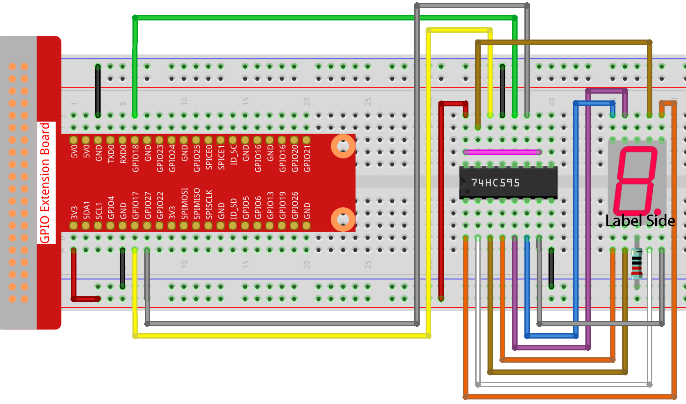

Nota
Ciao, benvenuto nella SunFounder Raspberry Pi & Arduino & ESP32 Enthusiasts Community su Facebook! Approfondisci le tue conoscenze su Raspberry Pi, Arduino ed ESP32 insieme ad altri appassionati.
Perché Unirsi?
Supporto Esperto: Risolvi problemi post-vendita e sfide tecniche con l’aiuto della nostra community e del nostro team.
Impara e Condividi: Scambia suggerimenti e tutorial per migliorare le tue competenze.
Anteprime Esclusive: Accedi in anteprima agli annunci dei nuovi prodotti.
Sconti Speciali: Approfitta di sconti esclusivi sui nostri nuovi prodotti.
Promozioni Festive e Omaggi: Partecipa a omaggi e promozioni speciali per le festività.
👉 Pronto a esplorare e creare con noi? Clicca su [Qui] e unisciti subito!
1.1.4 Display a 7 Segmenti
Introduzione
Proviamo a pilotare un display a 7 segmenti per visualizzare numeri da 0 a 9 e lettere da A a F.
Componenti

Schema Elettrico
Collega il pin ST_CP del 74HC595 al GPIO18 del Raspberry Pi, SH_CP al GPIO27 e DS al GPIO17, con le uscite parallele connesse agli 8 segmenti del display LED a 7 segmenti. Inserisci i dati nel pin DS nel registro a scorrimento quando SH_CP (ingresso di clock del registro a scorrimento) è al fronte di salita, e nel registro di memoria quando ST_CP (ingresso di clock della memoria) è al fronte di salita. Successivamente, puoi controllare gli stati di SH_CP e ST_CP tramite i GPIO del Raspberry Pi per trasformare i dati in ingresso seriale in uscita parallela, risparmiando GPIO del Raspberry Pi per pilotare il display.

Procedura Sperimentale
Passo 1: Costruisci il circuito.
Passo 2: Vai alla cartella del codice.
cd ~/davinci-kit-for-raspberry-pi/nodejs/
Passo 3: Esegui il codice.
sudo node 7-segment_display.js
Dopo l’esecuzione del codice, vedrai il display a 7 segmenti visualizzare 0-9, A-F.
Codice
const Gpio = require('pigpio').Gpio;
const segCode = [0x3f, 0x06, 0x5b, 0x4f, 0x66, 0x6d, 0x7d, 0x07, 0x7f, 0x6f, 0x77, 0x7c, 0x39, 0x5e, 0x79, 0x71];
const SDI = new Gpio(17, { mode: Gpio.OUTPUT });
const RCLK = new Gpio(18, { mode: Gpio.OUTPUT });
const SRCLK = new Gpio(27, { mode: Gpio.OUTPUT });
function hc595_shift(dat) {
for (let j = 0; j < 8; j++) {
let code = 0x80 & (dat << j);
if (code != 0) {
code = 1;
}
SDI.digitalWrite(code);
SRCLK.trigger(1,1);
}
RCLK.trigger(1,1);
}
let index = -1;
setInterval(() => {
index = (index+1)%16;
hc595_shift(segCode[index]);
}, 1000);
Spiegazione del Codice
const segCode = [0x3f,0x06,0x5b,0x4f,0x66,0x6d,0x7d,0x07,0x7f,0x6f,0x77,0x7c,0x39,0x5e,0x79,0x71];
Definisci un array di codici esadecimali (catodo comune) dei segmenti da 0 a F.
const SDI = new Gpio(17, { mode: Gpio.OUTPUT });
const RCLK = new Gpio(18, { mode: Gpio.OUTPUT });
const SRCLK = new Gpio(27, { mode: Gpio.OUTPUT });
Inizializza i pin 17, 18 e 27 in modalità di uscita e assegnali rispettivamente a SDI, RCLK e SRCLK.
function hc595_shift(dat) {
for (let j = 0; j < 8; j++) {
let code = 0x80 & (dat << j);
if (code != 0) {
code = 1;
}
SDI.digitalWrite(code);
SRCLK.trigger(1,1);
}
RCLK.trigger(1,1);
}
Implementa una funzione hc595_shift per convertire i campi dell’array segCode in numeri e visualizzarli sul display a 7 segmenti.
let code = 0x80 & (dat << j);
if (code != 0) {
code = 1;
}
SDI.digitalWrite(code);
Assegna i dati dat al pin SDI (DS) bit per bit.
Qui supponiamo che dat=0x3f (0011 1111). Quando j=2, 0x3f verrà spostato a sinistra (<<) di 2 bit.
1111 1100 (0x3f << 2) & 1000 0000 (0x80) = 1000 0000, quindi il risultato è vero.
A questo punto, 1 viene scritto su SDI.
SRCLK.trigger(1,1);
Genera un impulso di fronte di salita e sposta i dati da DS nel registro a scorrimento.
trigger(pulseLen, level)pulseLen - pulse length in microseconds (1 - 100)
level - 0 or 1
Invia un impulso di trigger al GPIO.
Il GPIO viene impostato sul livello per pulseLen microsecondi e quindi reimpostato a livello opposto.
RCLK.trigger(1,1);
Genera un impulso di fronte di salita e sposta i dati dal registro a scorrimento al registro di memoria.
let index = -1;
setInterval(() => {
index = (index+1)%16;
hc595_shift(segCode[index]);
}, 1000);
Infine, usa la funzione hc595_shift() per convertire i campi in segCode e visualizzarli sul display a 7 segmenti.
Immagine del Fenomeno